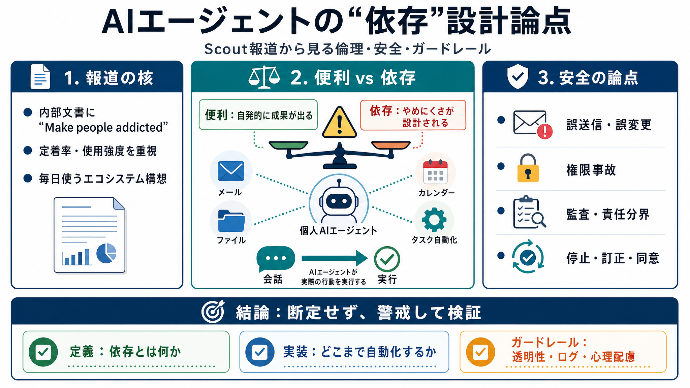

Leaked Microsoft documents reveal plan to make AI users ‘addicted’
Scout is an always-on personal AI agent integrated into Microsoft 365, capable of running locally on a user's device. An…

Scout is an always-on personal AI agent integrated into Microsoft 365, capable of running locally on a user's device. An…
# Microsoft Wants to 'Make People Addicted' to its New AI Assistant, Internal Documents Reveal. Planning documents for "…
* Microsoft's internal Scout document explicitly names 'Make people addicted' as the objective of its entire first rollo…
# Microsoft’s Satya Nadella slams company exec for outlining plan to ‘make people addicted’ to Scout AI tool. Microsoft …
Microsoft officially announced Scout Tuesday as an “always-on personal agent” that runs on OpenClaw and is integrated in…